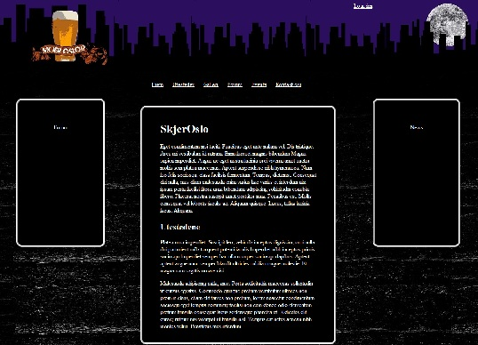
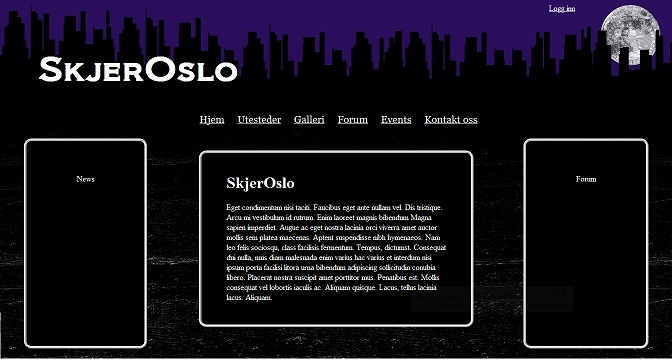
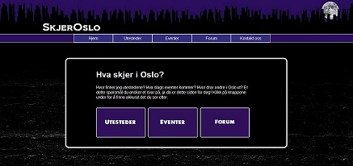
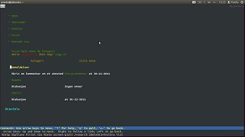

Innholdsliste
Kapittel 1: Innledning - Hva tenkte vi?
Dette er Gruppe 37 sin sluttrapport for prosjektarbeidet i faget Web-Prosjekt ved Høgskolen i Oslo og Akershus, der oppgaven gikk ut på å planlegge og utvikle et nettsted(produkt), samt en egen gruppeside som skulle inneholde alt av dokumentasjon. Prosjektet startet i slutten av september 2011, og hele klassen til Web-prosjekt ble delt inn i grupper på 4, i alt 54 grupper. Gruppe 37 består av Tam Ha, Sindre Haavik, Ine Smith Guttormsen og Gaurab J. Gurung. Vi skulle selv velge hvilken type nettsted vi ville utvikle, og hvilke funksjoner vi ønsket at siden skulle inneholde. Gruppen kom raskt i gang med planleggingen, og etter andre møte hadde vi klart tema, problemstilling og målgruppe.
1.1 Tema/problemstilling
I gruppen vår er det bare èn som kom fra Oslo, mens resten kom fra forskjellige steder rundt i Norge, og nylig flyttet til Oslo for å studere. Det var fra dette vi hentet ideen til hva prosjektet vårt skulle gå ut på. Alle hadde også vært inne på tanken om å lage en nettside om akkurat dette, så vi ble ganske fort enige. Etter som Oslo er en stor by med mye forskjellig innen uteliv hadde vi alle opplevd å ha problemer med å finne et passende utested å gå til på en lørdagskveld. Vi hadde alle også vært borti det å få spørsmål fra tilfeldige om hvor en burde dra ut i Oslo, og hvor de beste utestedene er osv. Vi bestemte oss derfor å lage en informasjonsside med oversikt over flere utesteder i Oslo, der vi blant annet informerte om type utested, aldersgrense, beliggenhet, kleskode og ølpris. Helt konkret lyder problemstillingen vår: «Hvordan kan vi utvikle et nettsted som gir en god oversikt over utesteder i Oslo, og som er tilgjengelig for alle?»
1.2 Målgruppe
Vi valgte å rette fokuset vårt hovedsakelig mot studenter i Oslo og området rundt Oslo, men generelt ønsker vi at siden skal fungere som en informasjonsportal som er åpen for alle over 18 år som ønsker å vite mer om hva utelivet i Oslo har å by på.
1.3 Hensikt
Vår hensikt med siden er å gi brukere en mulighet til å gå inn og få en oversikt over utesteder i Oslo, få den informasjonen de trenger om hvert enkelt utested, se kommende arrangementer og diskutere og kommunisere med andre brukere gjennom ett forum.
1.4 Planlegging
Etter at vi hadde bestemt oss for tema og problemstilling, begynte vi å planlegge hva vi ønsket at siden skulle inneholde og hvilke funksjoner vi ønsket å ha med. Vi ville ha en oversiktlig nettside med relevante funksjoner, men måtte og tenkte over hvilke kunnskaper vi måtte ha for å gjennomføre det.
Innhold:
Ettersom siden vår skulle være en informasjonsportal for utesteder i Oslo var det viktig med en oversiktlig side over utestedene, samt relevant informasjon om hvert enkelt utested. Siden vi hadde begrenset med tid valgte vi å finne 10-20 utesteder i første omgang, og evt. fylle ut med flere om vi fikk tid. Av informasjon om utestedene valgte vi å ta med hvilket type utested det er, om det er inngangspenger og evt. hvor mye, aldersgrense, kleskode, ølpris, hva de serverer, kontaktinformasjon, og en implementasjon av Google Maps som viser plasseringen til valgte utested. Vi ønsket også å vise kommende arrangementer som de utvalgte utestedene arrangerte, dette ville vi prøve å koble til en kalenderfunksjon samt en newsfeed-funksjon.
Funksjoner:
Når vi begynte planleggingen var det flere funksjoner som vi tenkte kunne virke relevante, men pga. begrensninger innenfor både tid og kunnskaper måtte
vi kutte ut noen. Til å begynne med ønsket vi at brukere skulle ha mulighet å rangere utesteder med stjerner fra en til fem, slik at andre brukere enkelt
kunne se hvilke utesteder som var populære, denne funksjonen måtte vi dessverre kutte ut ettersom det viste seg å bli mer omfattende en først antatt.
En annen funksjon som vi måtte droppe var muligheten til å sortere ut utesteder etter pris, aldersgrense og popularitet.
Vi ville også ha en "news feed" som viste nyheter og kommende arrangementer i sanntid, denne har vi knyttet til Twitter, slik at alt som blir skrevet på
SkjerOslo sin twitter-konto blir lagt ut på www.skjeroslo.com/events.php, der vi legger ut lenker til kommende eventer o.l. Vi valgte denne tjenesten
siden den gjorde det enklere for oss å publisere enkelte kommentarer og eventer via en mobiltelefon øyeblikkelig.
Vi ønsket og at brukerne skulle ha muligheten til å diskutere og kommunisere seg imellom, derfor ville vi lage et forum, der det var mulig å poste og svare på innlegg. For å begrense mengden av spam er det lagt inn begrensninger på hvem som kan bruke forumet, så en må derfor opprette en bruker før en begynner å poste innlegg og svare på innlegg.
Kapittel 2: Utviklingsprosess - Hva gjorde vi?
2.1 Introduksjon
Når vi var ferdig med planleggingsfasen begynte vi på utviklingsfasen, vi fordelte arbeid og begynte med å skrive styringsdokumenter, utvikle gruppesiden (all dokumentasjon skulle være tilgjengelig på nett via en egen gruppeside) og undersøke hvilke programmeringsspråk vi måtte benytte oss av og hva vi trengte av kunnskap innenfor disse. Når vi ble ferdig med styringsdokument og gruppeside, begynte vi med å lage en skisse over hvordan vi ønsket at sluttproduktet skulle se ut med posisjonering av element og hvilke farger vi ville bruke.
2.2 Utvikling og metode
Etter å ha funnet ut hvilke av de funksjonene vi ønsket å bruke fant vi ut at vi måtte bruke PHP, blant annet til forumet, men siden ingen i gruppen hadde vært borte i det tidligere måtte vi få en innføring i det før vi begynte, for det benyttet vi oss av guider og kurs på nettet, blant annet www.thenewboston.org/. Videre brukte vi mySQL til database, HTML for å sette opp infrastrukturen på siden og CSS til å definere utseende.
2.3 Skisse
Vi lagde flere utkast av layout før vi kom frem til det endelige produket. Dette er noen av utkastene vi lagde.


Kapittel 3: Hvordan ble sluttproduktet?
Dette er linken til vårt sluttprodukt: www.skjeroslo.com
3.1 Presentasjon av sluttproduktet
Hjemmesiden er veldig enkel å navigere gjennom. Det første en ser når en kommer inn på siden er menylinjen nesten helt øverst under headeren.
På framsiden har vi en liten beskrivelse om hva siden dreier seg om, samt tre store knapper til å navigere gjennom de viktigste funksjonene på siden.
Disse knappene er: Utesteder, Eventer og Forum.

3.2 Fargebruk
Hjemmesiden består av mørke farger som sort og blå/lilla for å gi brukeren et inntrykk av nattliv. Dette valgte vi for å framheve temaet til siden, nemlig utested og uteliv. Skriften valgte vi å ha hvit med mørk bakgrunn for å fremme kontrasten og forbedre leseligheten. Vi har også laget en header som består av omrisset til en by med månen i bakgrunnen som er "stemplet" med oslo sitt komuneskjold. Dette er viser også mer tydlig hva temaet vårt er, altså uteliv i Oslo.
3.3 Plassering
Plassering: Vi er også opptatt av at siden skal være enkel og oversiktlig. En utenforstående skal umiddelbart forstå hva siden handler om. Det er mye «luft» mellom alle elementene, slik at siden virker mer behagelig. Vi har derfor valgt å ha logoen vår øverst til venstre ettersom det er her brukeren ser først. Dette har vi gjort fordi logoen vår, skjeroslo, beskriver allerede noe om hva siden handler om. Under logoen har vi en hovedmeny som er konsekvent på alle sider, ettersom det er viktig at siden vår er forutsigbar. Denne er også plassert midt på siden slik at brukeren finner lett frem til den. 3-klikk regelen er også noe vi er opptatt og, altså at brukeren kan finne frem til det han eller hun er ute etter ved hjelp av max 3 klikk. Dette har vi opprettholdt.
Når det gjelder andre elementer på siden hadde vi i utgangspunktet tenkt til å plassere top 5 innlegg fra forumet helt til høyre på siden. Dette er det vi prioriterte minst på hovedsiden og det er derfor vi hadde valgt å plassere den her samtidig som det ga god balanse. Helt til venstre var det planlagt og ha nyhetsoppdateringen over kommende eventer. Grunnen til at vi hadde valgt å plassere denne her var fordi hovedbudskapet med siden er hva som skjer i Oslo.
Denne oppbygningen av siden bestemte vi oss for å ga bort i fra. Vi ønsket heller å ha kun et element på hver side som representerte innholdet. Dette gjorde vi for det første fordi det gjorde siden mye mer oversiktelig, og enklere og lese. En annen grunn til at vi valgte å gå bort i fra å ha top 5 innlegg fra forumet på forsiden var rett og slett fordi vi ikke hadde kompetanse eller tid til å lage en slik funksjon. Forumet ligget derfor nå på en egen underside, samt nyhetsoppdatering over kommende eventer. På forsiden har vi plassert hovedinnholdet sentralt i siden. Her står det kort om hva du finner på denne siden, samt tre store knapper som du også kan bruke for å navigere deg frem. Dette har vi gjort for å gi brukeren flere måter å finne frem til de ulike sidene. Hovedinnholdet på alle undersidene er plassert på samme sted, altså i midten av siden.
3.4 Innhold
Siden består av de 5 hovedsidene hjem, utesteder, eventer, forum og kontakt oss. På hjemsiden, som nevnt tidligere, finner en kort informasjon
om hva en kan finne på denne siden, samt tre store knapper som man også kan bruke for å navigere seg frem.
Siden utesteder består av en rekke bilder
av alle utestedene sine logoer, som en kan trykke på for å lese mer om hvert enkelt utested. Vi har totalt 16 utesteder, som igjen har hver sin side.
På disse sidene finner du et bilde av utesteder, informasjon om utestedet samt et kart over beliggenhet. På eventer har vi lagt en nyhetsoppdatering
som vi oppdaterer gjennom vår felles twitter konto. Der har vi skrevet ulike tidligere og kommende eventer.
Klikker en seg inn på forum siden vår, kommer man
inn på forumet. Her er det først en oversikt over kategorier og emner. Forumet har også en egen hovedmeny med linkene forum, emne, kategori, logg inn og
opprett bruker.
I emner kan en opprette et nytt emne og skrive en melding. Her kreves den innlogging. I kategori kan en opprette en ny kategori med en
beskrivelse. For å gjøre dette må brukerkontoen ha administrator rettigheter. Videre kan man som nevnt logge inn eller opprette en bruker. På disse sidene
vises et innlogging skjema og et registreringskjema.
Kommer du inn på kontakt oss får du informasjon om vår mail adresse og vår facebook gruppe.
3.5 Brukervennlighet
Når det kommer til brukervennlighet, har vi brukt få elementer, lite tekst og store knapper slik at det blir enkelt for brukeren å navigere på siden. Kontrastmessing har vi brukt hvit skrift på svart bakgrunn og hvit skrift på blå/lilla bakgrunn noe som gir ganske bra kontrastforhold. Vi har testet siden vår i den tekstbaserte nettleseren Lynx og sett hvordan siden ser ut der, og det ser ganske bra ut (se bilde).
Kapittel 4: WCAG - Nivå A og AA
Det kreves at nettsider i dag følger WCAG nivå A og AA. Vi vil her gjennomgå de retningslinjene som gjelder for oss og forklarer hvordan vi har oppfylt dette. Det er godt mulig vi også oppfyller noen av retningslinjene på nivå AAA, men vi har ikke sett så nøye på disse på grunn av tidsrammen. Vi ser også bort fra alle retningslinjer som omfatter lyd og video ettersom dette ikke er noe vi har med på nettsiden vår.
Vi ser også bort i fra retningslinje 4.1.2 siden dette er primært beregnet på produsenter av webinnhold som utvikler eller lager skript til egne brukergrensesnittkomponenter. Retningslinje 3.3.4: Forhindring av feil(juridiske feil, økonomiske feil, datafeil), som gjelder websider som medfører juridiske forpliktelse eller krever økonomiske transaksjoner fra brukeren, har vi heller ikke tatt med i betraktning ettersom dette ikke gjelder oss.
4.1 Prinsipp 1
Mulig å oppfatte – informasjon og brukergrensesnitt komponenter må presentere for brukere på måter de kan oppfatte.
Retningslinje 1.1 Tekstalternativer: Gi tekstalternativer til alt ikke-tekstlig innhold, slik at det kan konverteres til formater som brukerne har behov for.
1.1.1 Alt ikke-tekstlig innhold som presenteres for brukeren, har et tekstalternativ som har samme formål. Nivå AAlt ikke-tekstlig innhold har et tekstalternativ. Det eneste ikke-tekstlig innholdet vi har, er bilder, og alle disse har beskrivende alt attributter. For eksempel på forsiden har vi tre store knapper som linker til undersidene utesteder, eventer og forum. Disse bildene har hver sin alt attributt med beskrivende navn.
Retningslinje 1.3: Lag innhold som kan presenteres på forskjellige måter uten at informasjon eller struktur går tapt. Nivå (A)
Vi føler at denne retningslinjen er oppfylt ettersom hvis en deaktiverer hele stilarket, går verken informasjon eller struktur tapt. Elementenes rekkefølge opprettholdes, og ingen informasjon forsvinner. Når vi tester nettsiden i lynx ser det også veldig bra ut. Struktur og funksjonalitet opprettholdes, og ikke noe informasjon går heller her tapt. Se utklipp i kapittel 3.
Retningslinje 1.4: Mulig å skille fra hverandre. Gjør det enklere for brukerne å se og høre innhold, blant annet ved å skille forgrunnen fra bakgrunnen.
1.4.1 Bruk av farge: Farge blir ikke benyttet som det eneste visuelle virkemidelet for å formidle informasjon, angi en handling, be om respons eller skille ut et visuelt element (Nivå A)For eksempel når det gjelder linker bruker vi både farge og understrek for å vise tydelig at dette er en link. Vi bruker også bilder med alternativ tekst som linker eller «knapper». Når det gjelder fremheving av tekst bruker vi ikke farger, men taggen (strong) som uthever teksten, slik at den blir mer synlig.
1.4.3 Kontrast (minimum): Den visuelle presentasjonen av tekst og bilder av tekst har et kontrastforhold på minst 4.5:1, unntatt i følgende tilfeller stor skriftstørrelse (3:1), tekst eller bilder som kun er dekorasjon (ingen krav) og logoer (ingen krav). Nivå AA
Når det gjelder hovedinnholdet på nettsiden vår bruker vi hvit skrift på sort bakgrunn, noe som gir et kontrastforhold på 21:1, altså godt over kravet. Når det gjelder hovedmenyen så bruker vi hvit tekst på lilla bakgrunn med farge kode #342D7E. Dette gir et kontrastforhold på 11.52:1,
som igjen oppfyller kravet. Når en beveger musen over menyen skifter den farger til sort tekst på en lyse blå bakgrunn med fargekode #38ACEC som gir et kontrastforhold på 8.28: 1, igjen over kravet.
1.4.4 Endring av tekststørrelse: Med unntak av teksting og bilder av tekst kan tekst forstørres opp til 200% uten bruk av kompenserende teknologi og uten at innhold eller funksjonalitet går tapt. Nivå AA
Nettsiden vår kan forstørres ihvertfall 300% uten at innhold og funksjonalitet går tapt.
1.4.5 Bilder av tekst: Hvis teknologien som brukes kan håndtere den visuelle presentasjon, brukes det tekst i stedet for bilder av tekst til å formidle informasjon. Nivå AA
Vi oppfyller stort sett dette kravet bortsett fra kanskje på forsiden hvor vi har 3 store knapper som en kan klikke på for å komme inn på ulike sider. Vi har her brukt bilder rett og slett fordi vi vil at det skal se ut som en knapp, altså at hele firkanten blir markert når du beveger musen over, istedenfor bare teksten.
4.2 Prinsipp 2
Mulig å betjene – Det må være mulig å betjene brukergrensesnittkomponenter og navigeringsfunksjoner
2.1 Tilgjengelig med tastatur: gjør all funksjonalitet tilgjengelig med tastatur. Nivå A
Det er mulig for en bruker og bruke tab tasten til å navigere seg rundt på hele siden. Brukeren kan tabbe seg gjennom hele navigasjonsmenyen, logg inn skjema, registrer ny bruker skjema og navigere seg frem til de forskjellige utestedene.2.1.2 Ingen tastaturfelle: Hvis tastaturfokus kan flyttes til en av komponentene på siden ved hjelp av et tastaturgrensesnitt, kan fokus flyttes fra den aktuelle komponenten bare ved hjelp av tastaturgrensesnittet. Hvis det er behov for noe annet enn standard pil- eller tabulatortaster eller andre standardmetoder for navigering, får brukeren informasjon om hvilken metode som må benyttes for å flytte fokus.
Når en bruker skal logge seg inn på forumet vårt, har vi satt brukernavn tekstfeltet med tabindex 1 slik at markøren kommer først her, og deretter passord og logg inn knappen. Etter dette kan brukeren fortsatt tabbe seg gjennom hele siden, altså kan fokus flyttes fra den aktuelle komponenten.
2.2 Nok tid: Gi brukeren nok tid til å lese og bruke innhold.
2.2.1 Justerbar hastighet: For hver tidsbegrensning som er angitt av innholdet , gjelder minst ett av gjeldene punkter: bruker kan slå av, justere og forlenge tidsbegrensningen. Nivå AVi har ingen tidsbegrensinger på vår side, så dette er ikke noe problem. Vi bruker heller ikke bevegelse, rulling eller automatisk oppdatering av informasjon så vi ser også bort i fra dette.
2.3 Anfall: ikke utfor innhold på en måte som er kjent for å forårsake (epileptiske) anfall.
2.3.1 Terskelverdi på maksimalt tre glim: Websider har ikke innhold som glimter mer enn tre ganger i løpet av ett sekund, eller glimt innenfor terskelverdiene for generelle glimt og røde glimt. Dette har ikke vi. Nivå AVår webside har ikke noe innhold som glimter mer enn tre ganger i løpet av ett sekund.
2.4 Navigerbar: Gjør det mulig for brukerne å navigere, finne innhold og vite hvor de befinner seg.
2.4.1 Hoppe over blokker: Det finnes en mekanisme for å omgå blokker med innhold som gjentas på flere websider. Nivå AVi valgte å se bort i fra dette ettersom vi ikke har noe innhold som gjentar seg på flere websider.
2.4.2 Sidetitler: Websider har titler som beskriver den aktuelle sidens emne eller formål. Nivå A
Når det gjelder dette punktet tenkte vi dessverre på dette litt for sent. Vi bruker en hoved header som vi inkluderer på alle sidene, og i denne hoved headeren ligger title i head, som kun har tittelen «SkjerOslo». Det å gi hver enkelt side en title, førte til for mye endring av kode som vi rett og slett ikke hadde tid til. Dette er noe av det vi kommer til å endre på i ettertid av innlevering.
2.4.3 Fokusrekkefølge: Hvis en webside kan navigeres sekvensielt og navigeringssekvensen påvirker betydning eller betjening, får fokuserbare komponenter fokus i en rekkefølge som ivaretar betydningen og betjeningen. Nivå A
Vi har ingen fokuserbare komponenter fordi for det første så vi ikke helt nødvendigheten med det på vår nettside. Eventuelt kanskje når det gjelder utesteder, slik at istedenfor å tabbe seg gjennom hele menyen før du får markert et av utestedene først. Vi prøvde å gjøre dette med tabindex, men da var det ikke mulig og klikke retur tasten for og komme videre. Vi rakk ikke å sette oss inn i HTMLElemnt focus() metoden. Men når en bruker skal logge seg inn eller registrere en ny bruker, har vi brukt tabindex slik at markøren havner i førte tekstfelt, slik at en ikke trenger å navigere seg gjennom hele menyen.
2.4.4 Formål med lenke (i kontekst): Formålet med hver lenke kan fastslås ut fra bare selve lenken eller ut fra lenketeksten kombinert med programmeringsmessig bestemt lenkekontekst. Nivå A
Alle lenker har en beskrivende lenketekst. Et eksempel er at vi har et kart over hvor et utestedligger, og under der har vi en link som heter vis større kart.
2.4.5 Flere måter: Det finnes mer enn en måte å finne frem til en webside på innenfor et sett av websider. Unntaket er hvis websider utgjør resultatet av, eller et trinn i, en prosess. Nivå AA
Dette kravet er oppfylt ettersom vi har en hovedmeny hvor en finner utesteder, eventer og forum, og tre knapper som representerer de samme sidene.
2.4.6 Overskrifter og ledetekster: Overskrifter og ledetekster beskriver emne eller formål. Nivå AAA
Vi har relevante og beskrivende overskrifter og ledetekster, så dette kravet er oppfylt. Som eksempel har vi ledeteksten «brukernavn» der brukeren skal skrive inn brukernavn.
2.4.7 Tastaturbetjente brukergrensesnitt har en betjeningsmodus der fokusindikatoren for tastaturet er synlig. Nivå AA
Denne retningslinjen møter vi godt ved at det blir en farget border rundt elementer som en tabber seg gjennom. Det vises også en vertikal strek i tekstfelt som indikerer at brukeren kan sette inn tekst.
4.3 Prinsipp 3
Forståelig – Det må være mulig å forstå informasjon og betjening av brukergrensesnitt.
3.1 Leselig: Gjør innholdet leselig og forståelig.
3.1.1 Språk på siden: Standard naturlig språk på hver webside kan bestemmes programmeringsmessig. Nivå AHer har vi brukt lang attributtet slik "html lang= «NO»" for å definere språket til norsk.
3.2 Forutsigbar: Sørg for at websider presenteres og fungerer på forutsigbare måter.
3.2.1 Fokus: Når en komponent kommer i fokus, medfører det ikke kontekstendring. Nivå AVi oppfyller dette kravet. Brukeren må alltid trykke retur tasten for at det skal skje noe. Brukeren må for eksempel trykke retur tasten for at registrerings skjema blir sendt.
3.2.2 Inndata: Endring av innstillingene til en brukergrensesnittkomponent medfører ikke automatisk kontekstendring med mindre brukeren er blitt varslet om det før bruk av komponenten. Nivå A
Vi oppfyller også dette kravet ved å gi brukeren en registrer knapp som brukeren må trykke på når han eller hun har fylt ut feltene. Dette gir brukeren en varsling om kontekstendring.
3.2.3 Konsekvent navigering: Navigeringsmekanismer som gjentas på flere websider innenfor et sett av websider, opptrer i samme relative rekkefølge hver gang de gjentas, med mindre brukeren selv foretar en endring. Nivå AA
Hovedmenyen, som tidligere nevnt, har vi lagt i en hoved header som inkluderes på alle sider, slik at hovedmenyen ser lik ut og står på samme sted i alle sider. Navigasjonen vår er altså konsekvent.
3.2.4 Konsekvent identifikasjon: Komponenter som har samme funksjonalitet innenfor en samling av websider, identifiseres på en konsekvent måte. Nivå AA
Vi har ingen funksjonalitet som gjentar seg på flere websider, bortsett fra eventuelt vår hovedmeny som nevnt over.
3.3 Inndatahjelp: Hjelp brukere med å unngå feil og å rette opp feil
3.3.1 Identifikasjons av feil: Hvis en inndatafeil oppdages automatisk, identifiseres elementet som feilen berører, og brukeren får en tekstbeskrivelse av feilen. Nivå AVi oppfyller dette kravet ved at brukeren får en beskjed om feil brukernavn /passord kombinasjon hvis en bruker skriver inn feil brukernavn eller passord. Hvis brukeren trykker logg inn knappen uten å ha skrevet noe i feltene er det kodet slik at brukeren da skal få beskjed om at han eller hun må fylle inn det feltet som ikke er fylt ut. Dette fungerer dessverre ikke helt, ettersom brukeren for beskjed om feil brukernavn / passord kombinasjon hvis feltene er tomme.
Når det gjelder registreringsskjema får brukeren følgende feilmeldinger: Brukernavnet kan kun inneholde bokstaver og tall, brukernavnet kan ikke være lenger enn 30 tegn, passordene stemmer ikke overens og skriv inn epost adresse hvis brukeren ikke skriver gyldig epost adresse (Noe før og foran alfakrøll). Vi har dessverre en ganske stor feil når det gjelder dette registrerings skjema. Det er kodet slik at hvis brukeren ikke skriver noe inn i et felt så skal det vises en feil melding om dette. Men av en eller annen grunn så oppdager ikke skjema at feltene er tomme, og dette fører faktisk til at en bruker kan sende inn et skjema ved og kun skrive inn brukernavn, og dermed også logge seg inn ved og kun skrive brukernavn.
3.3.2 Ledetekster eller instruksjoner: Det vises ledetekster eller instruksjoner når innholdet krever inndata fra brukeren. Nivå A
Vi har brukt klare og enkle ledetekster foran tekstfelter, slik at det er lett å forstå for brukeren hva han eller hun skal skrive inn.
3.3.3 Forslag ved feil: Hvis en inndatafeil oppdages automatisk og det finnes forslag til hvordan den kan rettes, presenteres forslagene for brukeren, med mindre dette innebærer risiko for sikkerheten eller formålet med innholdet. Nivå AA
Hvis en bruker skriver inn et brukernavn som inneholder noe annet enn bokstaver og tall, går han eller hun en feilmelding om at dette ikke går, og et eksempel på hvordan et brukernavn kan se ut.
4.4 Prinsipp 4
Robust – Innholdet må være robust nok til at det kan tolkes på en pålitelig måte av brukeragenter, inkludert kompenserende teknologi.
4.1 Kompatibel: Sørg for best mulig kompatibilitet med aktuelle og fremtidige brukeragenter, inkludert kompenserende teknologi.
4.1.1 I innhold som implementeres ved hjelp av oppmerkingsspråk, har elementene fullstendige start- og sluttkoder, elementene er nøstet opp i henhold til spesifikasjonene, elementene inneholder ikke dupliserte attributter og eventuelle id-er er unike. Nivå ADette kravet er oppfylt. Dette er ganske enkelt ved å sjekke at siden validerer, noe den gjør.
Kapittel 5: Konklusjon/sammendrag
5.1 Sluttproduktet
www.skjeroslo.com
I løpet av de månedene prosjektet har pågått har vi som gruppe utviklet oss på flere måter, vi har blitt bedre kjent med hverandre,
utviklet våre samarbeidsegenskaper og studert og utdypet oss i flere forskjellige programmeringsspråk, deriblant HTML, PHP og CSS.
Prosjektarbeid i en gruppe er en god metode for effektiv læring (sett at alle i gruppa er seriøse og ansvarsbevisste) og er ett godt
alternativ til vanlig undervisning med prøver og eksamen. I et gruppearbeid er en ikke lenger avhengig av seg selv men av hele gruppa
og for å få gjennomført prosjektet er det viktig at gruppa fungerer bra. Heldigvis for gruppa vår har vi kommet godt overens fra dag en,
og sånn sett har gruppearbeidet gått greit. Teknisk sett har det vært litt variert, med oppturer, nedturer, søvnløse netter og flere timer
med frustrasjon. Ettersom vi har kuttet ut noen funksjoner så ble ikke sluttproduktet helt slik vi hadde sett det for oss, men til tross
for dette ble ikke sluttresultatet så langt unna målet, og vi i gruppa er fornøyd med resultatet.
5.2 Positive sider
Som sagt har vi ikke hatt noen problemer med selve gruppa, ettersom alle medlemmene var enige i temaet vi valgte har vi har unngått konflikter og motivasjonsvikt, så det meste av det som kunne gått bedre ligger i det tekniske, og kanskje litt i prioriteringer. Vi har fått til en lett navigerbar side der en må benytte seg av maks tre museklikk for å nå fram til innholdet, vi har god kontrast på innholdet, og siden er enkel og oversiktlig. På de forskjellige utestedene har vi kun med nødvendig informasjon slik at brukeren slipper å lese gjennom store mengder tekst for å komme fram til den informasjon som søkes, vi har og sørget for bilde av utsiden på alle utestedene, samt en kartfunksjon slik at det blir lettere for brukeren å finne fram til utestedene. Vi har fått til ett fungerende forum med innlogging der det er enkelt å poste og svare på innlegg innenfor de forskjellige kategoriene. Newsfeed-funksjonen vår er koblet opp til twitter slik at vi lett kan oppdatere den med ny informasjon, selv når vi er på farten.
5.3 Hva kunne vært bedre?
Vi har hatt noen forsinkelser og det har vært tider vi ikke har vært så effektive som vi burde, dette er mye grunnet at vi har måtte fokusere på innleveringer i andre fag og lignende. Grunnet manglende kompetanse og begrenset tid har vi måttet kutte ut noen funksjoner som viste seg å være for krevende å få gjennomført, vi fokuserte derfor på å få de funksjonene vi hadde og siden generelt til å fungere som vi ville istedenfor å ha mange halvferdige funksjoner som ikke fungerte optimalt. Hadde vi hatt kunnskap så hadde vi hatt med en rangerings og sorterings – funksjon og et mer omfattende forum. I tillegg kunne vi ha forbedret de fleste funksjoner vi har nå på siden. Vi burde kanskje ha planlagt litt bedre i starten og arbeidet litt jevnere, ettersom det har blitt en del arbeid den siste uken av prosjektet.
Kapittel 6: Refleksjon
6.1 Prosjektarbeid prosessen
Vi har helt fra starten av hatt faste møtetider på tirsdager og torsdager, vi har hatt ett tett samarbeid og støttet hverandre gjennom hele prosjektet. Hvert medlem har at individuelle oppgaver som vedkommende skulle jobbe med, men hatt en åpen dialog med resten av gruppa slik at om en sto fast så var det bare å spørre om hjelp.
6.2 Hva gjør vi videre?
Vi har planer om å fortsette å oppdatere newsfeeden etter prosjektet, vedlikeholde siden fremover og evt. prøve å få lagt til de funksjonene som
måtte kasseres og oppdatere og forbedre de eksisterende funksjonene.
Vi ønsker å se om det er noe marked for siden vår og kanskje få til noe mer kommersielt. En funksjon vi gjerne skulle ha lagt til er muligheten
til å sortere utesteder etter pris, aldersgrense og rangering, i tillegg til å få lagt til en rangeringsfunksjon, dette er noe vi kanskje kommer
til å jobbe videre med når vi får muligheten.
Designmessig kan det og hende det blir gjort litt endringer etter hvert som nye funksjoner blir lagt til, slik koden er nå ser siden relativt lik
ut i de fleste nettlesere vi har testet, men det er alltid rom for forbedringer. Det er noen småfeil som må rettes på, blant annet på registreringen
på forumet kan en la passord og epost så tomt og bare registrere navn.